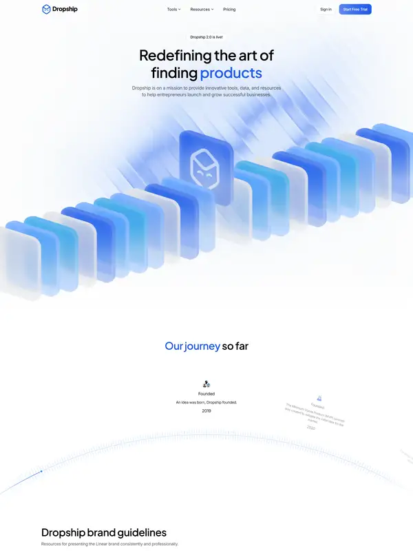
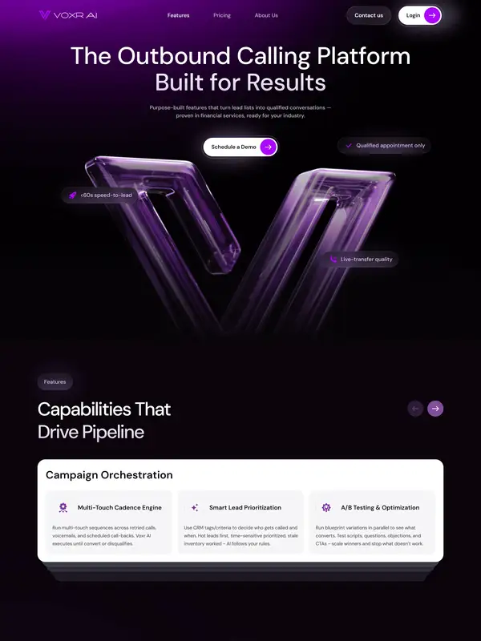
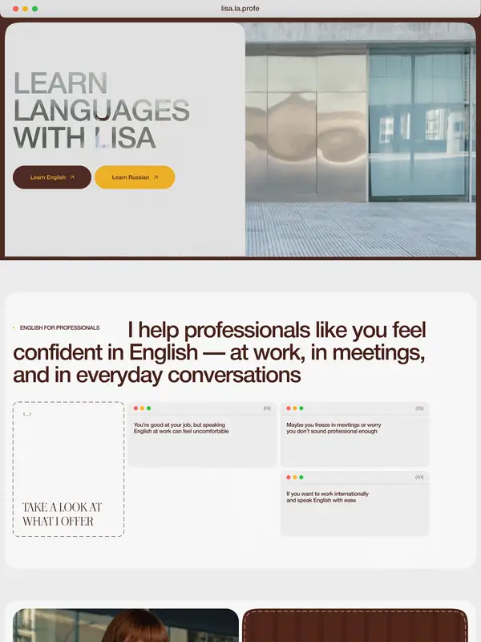
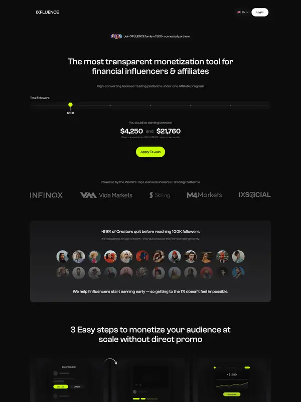
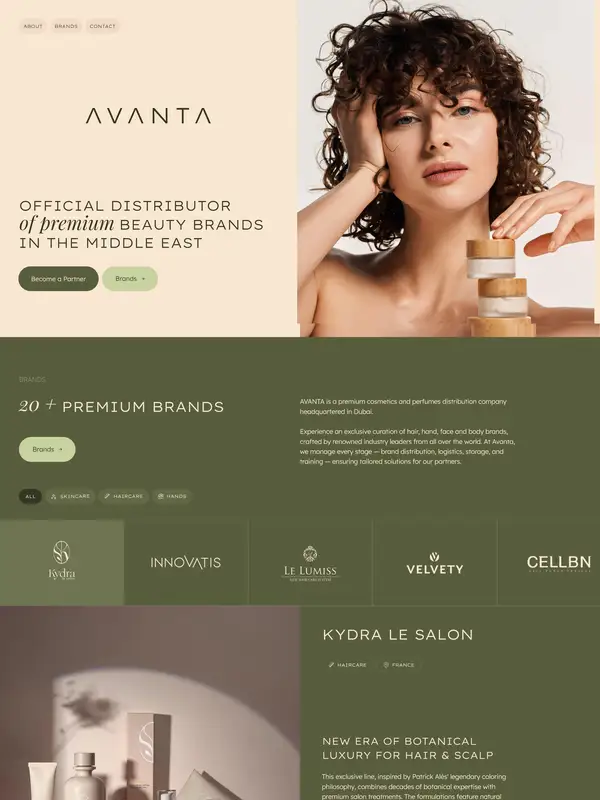
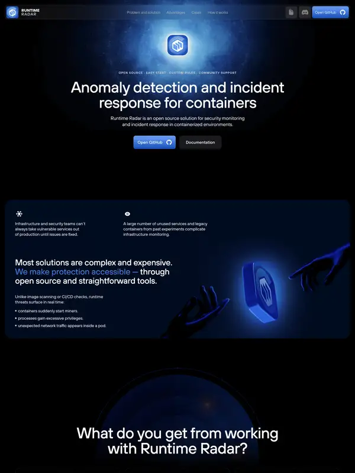

Адаптив под все устройства
Web Developer Portfolio
< Hello, client-ready web. />
Сайты, которые выглядят дорого и работают на заявки
Создаю современные сайты для экспертов, школ, малого бизнеса и digital-проектов. Делаю не просто красивые страницы, а понятные digital-инструменты для заявок, доверия и продаж.
HTML 01
CSS 02
JS 03
React ⚛
Mobile-ready ✓
Forms +
client-ready.website+
luma.
DIGITAL EXPERIENCEBuild a clear
Build a clear
presence.
Modern interfaces for ideas that deserve attention.
UX
Analytics connectedReady to launch ↗
Формы и аналитика
Структура под задачу бизнеса
01 / Про меня
Сайт должен не просто нравиться. Он должен работать.
Web Developer / Website CreatorДмитрий Лаврук@dima_marketing ↗
Меня зовут Дмитрий. Я создаю сайты для людей и проектов, которым важно выглядеть профессионально в интернете. В работе соединяю структуру, визуал, адаптивную верстку и понятный путь пользователя до заявки.
Я не просто собираю блоки. Сначала разбираю, что должен сделать сайт: объяснить продукт, вызвать доверие, показать услугу, привести заявку или стать сильной digital-визиткой.
Верстка макетов
Семантичная, аккуратная и адаптивная верстка без лишнего мусора.
Мобильная адаптация
Сайт должен выглядеть уверенно не только на ноутбуке, но и на телефоне.
Web-дизайн
Чистая композиция, типографика, визуальная иерархия и понятный UX.
Запуск и оптимизация
Формы, кнопки связи, базовая аналитика, проверка перед публикацией.
02 / Опыт
Практика через digital-проекты
Направления работы и самостоятельные sample-проекты: структура, визуал, адаптив и понятный путь к заявке.
2024–2026
Web-проекты и digital-упаковка
Лендинги, сайты услуг и портфолио
Разработка лендингов, промо-страниц, сайтов услуг и портфолио. Фокус: структура, визуал, адаптив, заявка.
LandingUXResponsive
Sample 01
Northline / Architecture Sample
Premium studio website
Шаблон лендинга архитектурной студии: выразительный первый экран, услуги, проекты и форма консультации.
ArchitectureLanding
Sample 02
Personal Brand Website Sample
Сайт для эксперта
Позиционирование, услуги, отзывы, FAQ и форма консультации в чистой personal brand подаче.
ExpertWebsite
Sample 03
Local Business Website Sample
Сайт услуг для бизнеса
Оффер, цены, карта, мессенджеры и заявка: понятный маршрут для локального клиента.
LocalServices
03 / Инструменты
Стек под задачу. Без лишнего шума.
Использую код, CMS и дизайн-инструменты там, где они действительно помогают проекту.
HTML5
Семантичный каркас страницы.
CSS3
Адаптив, визуал и анимации.
JavaScript
Интерактив без перегруза.
React
Компонентные интерфейсы.
Next.js
Современные web-приложения.
Figma
Макеты и визуальная система.
Tilda
Быстрые промо-запуски.
Webflow
Гибкие no-code сайты.
WordPress
Управляемые сайты и контент.
Forms
Заявки и обработка контактов.
Analytics
Базовая аналитика действий.
Integrations
Telegram и WhatsApp.
Навыки
Баланс кода, визуала
и продуктовой логики
04 / Работы
Live websites / visual selection
Избранные сайты
Шесть реальных сайтов с сильной визуальной подачей. Откройте оригинал, чтобы посмотреть интерфейс вживую.
Live website

SaaS / Landing Page
Dropship
Светлый продуктовый лендинг с понятной иерархией и аккуратными UI-блоками.
Live website

AI / SaaS Landing
Voxr AI
Контрастный AI-продукт с тёмной темой, сеткой преимуществ и сильным hero.
Live website

Education / Personal Brand
Lisa La Profe
Персональный образовательный лендинг с живой типографикой и понятным оффером.
Live website

Marketing / Platform
IXFLUENCE
Маркетинговая платформа в сдержанном стиле: крупные заголовки и чистая композиция.
Live website

Beauty / Service Landing
Avanta
Премиальная beauty-подача: спокойная палитра, много воздуха и мягкая типографика.
Live website

IT / Product Landing
Runtime Radar
Тёмный технологичный лендинг с минималистичной графикой и ясной структурой.
Скриншоты выбраны из каталога Referest ↗. Кнопки ведут на оригинальные сайты.
05 / Прайс
Понятный старт без сюрпризов
Финальная стоимость зависит от объёма, контента и интеграций. После обсуждения фиксируем состав работ.
01Popular
Landing Page
от 35 000 ₽Одностраничный сайт для услуги, курса, эксперта или продукта.
- структура
- дизайн
- адаптив
- форма заявки
- базовая аналитика
02
Сайт услуг / компании
от 60 000 ₽Многостраничный сайт для бизнеса или проекта.
- главная
- услуги
- контакты
- FAQ
- формы связи
03
Редизайн
от 25 000 ₽Обновление устаревшего сайта и первого впечатления.
- новый визуал
- структура
- мобильная версия
- первый экран
04
Доработки
индивидуальноПравки, адаптив, формы, интеграции и визуальные улучшения.
Написать ↗05
Аудит сайта
бесплатно / от 0 ₽Быстрый разбор сайта с комментариями и точками роста.
Заказать аудит ↗06 / Контакты
Давайте сделаем сайт, который не стыдно отправить клиенту
Напишите мне, расскажите задачу — я предложу структуру, формат и план запуска.